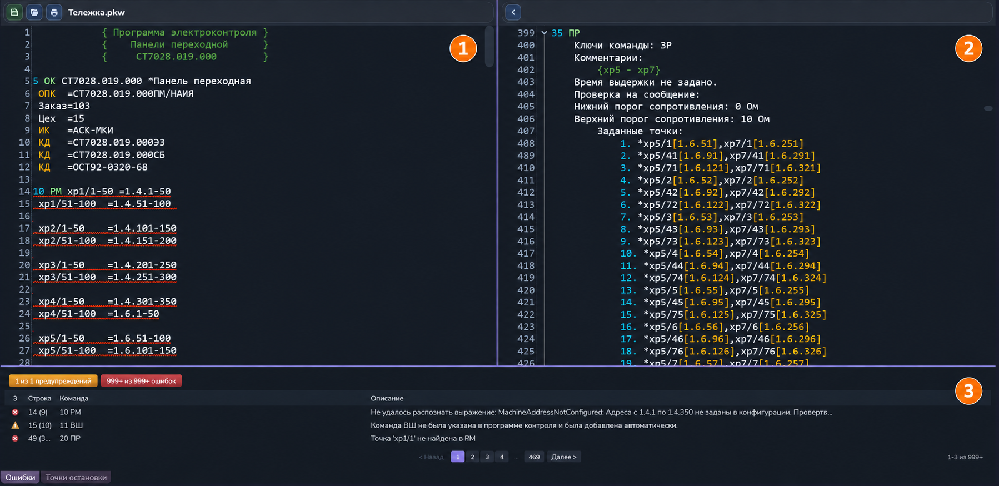

Общее описание
Транслятор позволяет сопоставить исходный текст программы контроля с результатом разбора команд, найти ошибки и подготовить программу к выполнению. Окно разделено на два редактора и нижнюю панель диагностики.

1. Исходный текст программы контроля
Левая область содержит текст программы на языке АСК. Здесь можно исправлять команды и параметры. Номера строк помогают ориентироваться в программе; длинные строки переносятся по ширине редактора. Подсветка и подчёркивание диагностик зависят от настроек интерфейса.
Над текстом находятся имя файла и кнопки сохранения, открытия папки и печати. Сохранение фиксирует изменения исходного файла; после исправлений повторите трансляцию, чтобы обновить разобранные команды и список сообщений.
2. Результат трансляции
Правая область показывает разобранные команды: ключи, параметры, принятые значения по умолчанию, схемы цепей и адреса точек. Это представление помогает проверить, как программа поняла исходную запись. Нумерация строк результата отличается от нумерации исходника, поскольку одна команда разворачивается в несколько поясняющих строк. Блоки команд можно сворачивать и раскрывать.
Кнопка со стрелкой вверху возвращает к исходному файлу. После успешной трансляции без ошибок становится доступно сохранение оттранслированного файла на диск. Исправления программы вносите в исходный текст и затем повторяйте трансляцию.
3. Ошибки и предупреждения
Нижняя панель содержит сообщения текущей трансляции. Для сообщения указываются тип, код, строка, команда и описание проблемы. Номера строк связывают исходный текст с результатом разбора; при отсутствии соответствующей строки переход в одну из областей может быть недоступен.
- Ошибки требуют исправления перед запуском программы контроля.
- Предупреждения сообщают о принятых значениях по умолчанию, автоматических дополнениях и других особенностях, которые нужно проверить.
Нажмите цветную кнопку со счётчиком ошибок или предупреждений, чтобы скрыть либо показать сообщения этого типа. Скрытие сообщений меняет только отображение списка. При большом количестве сообщений используйте номера страниц и кнопки «Назад» и «Далее». Количество строк на странице подстраивается под высоту панели.
Дважды щёлкните по сообщению: редакторы перейдут к связанным участкам исходника и результата. Пояснения к кодам приведены в разделе «Список ошибок».
Точки остановки
Вкладка «Точки остановки» в нижней панели показывает установленные остановки по командам. Здесь можно включать и выключать их, а двойным щелчком переходить к выбранной команде. Точки синхронизируются между исходным текстом и результатом трансляции. Они используются при последующем выполнении программы.
Расположение областей
Перетащите вертикальный разделитель между редакторами, чтобы изменить их ширину. Горизонтальный разделитель над нижней панелью меняет её высоту. Выбранная высота панели сохраняется для следующих открытий.
Порядок работы
- Откройте программу контроля и выберите её редактор.
- В меню «Выполнение» выберите «Трансляции» или нажмите Ctrl+B.
- Проверьте результат справа, ошибки и предупреждения внизу.
- Перейдите к проблемным местам двойным щелчком по сообщениям и исправьте исходный текст.
- Повторите трансляцию. После устранения ошибок сохраните изменения и переходите к запуску программы.
При критической ошибке структуры дальнейший разбор прекращается. После её исправления повторная трансляция может показать сообщения для ещё не проверенных команд.